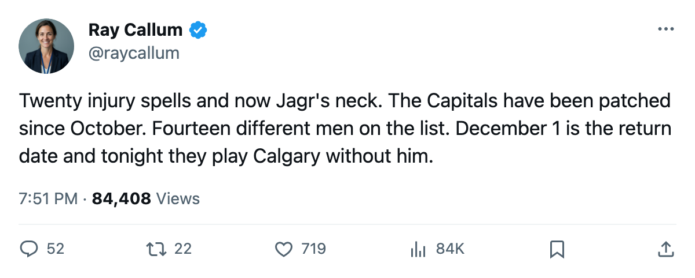
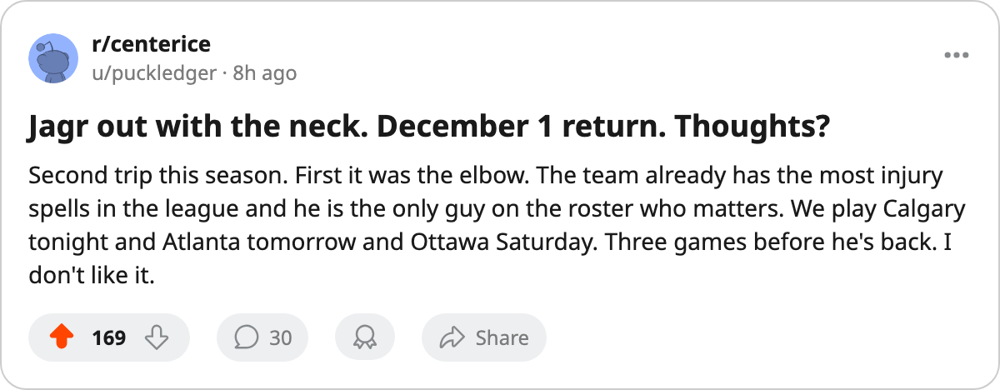

Injury Report: Washington Lose Jagr (Neck); Return Targeted for December 1
The Art Ross winner is out for the second time this season, and the Capitals already carry the league's most injury spells
 Ray CallumSenior correspondent · Home Ice Network
Ray CallumSenior correspondent · Home Ice Network
 Jaromir Jagr91 has a neck injury. The league designated the onset sometime between November 24 and November 26, with a return date of December 1. He missed
Jaromir Jagr91 has a neck injury. The league designated the onset sometime between November 24 and November 26, with a return date of December 1. He missed  Washington Capitals's 4-2 loss at
Washington Capitals's 4-2 loss at  Toronto Maple Leafs on Sunday.
Toronto Maple Leafs on Sunday.
The 91-overall winger won the Art Ross Trophy last season. He is the highest-rated player on a Capitals club sitting at 6-11-3, 19 points, 12th in the Eastern Conference. This is Jagr's second trip to the list this season. He carried an elbow spell earlier in the fall.
The lineup change is already in the record.  Peter Bondra88 moved into Jagr's first-line center slot.
Peter Bondra88 moved into Jagr's first-line center slot.  Daniel Cleary74 shifted from L3C to L2RW.
Daniel Cleary74 shifted from L3C to L2RW.  Branko Radivojevic77 moved from L2RW to L2C.
Branko Radivojevic77 moved from L2RW to L2C.
Twenty spells, fourteen men
Washington Capitals has logged 20 injury spells and 75 days lost this season, the most spells of any club in the league. Fourteen different players have landed on the list, touching every forward line and both defensive pairings. The club has been patched together since October, and now without last year's leading scorer.
Washington Capitals trails 8th-place  Philadelphia Flyers by 4 points and sits 2 behind
Philadelphia Flyers by 4 points and sits 2 behind  New York Islanders,
New York Islanders,  Florida Panthers, and
Florida Panthers, and  Montreal Canadiens in the Eastern standings.
Montreal Canadiens in the Eastern standings.
Tonight: a first meeting
The Capitals host  Calgary Flames, the first meeting between these clubs this season. Calgary is 8-9-1, 23 points, on a 2-game losing streak. The Flames have scored 14 goals in 5 division games, the fewest of any club in the Northwest. Washington managed 2 on Sunday against a Toronto Maple Leafs offense that has put up 73 this season.
Calgary Flames, the first meeting between these clubs this season. Calgary is 8-9-1, 23 points, on a 2-game losing streak. The Flames have scored 14 goals in 5 division games, the fewest of any club in the Northwest. Washington managed 2 on Sunday against a Toronto Maple Leafs offense that has put up 73 this season.
Washington Capitals plays  Atlanta Thrashers tomorrow and hosts
Atlanta Thrashers tomorrow and hosts  Ottawa Senators on November 29 before Jagr's scheduled return. Three games without him.
Ottawa Senators on November 29 before Jagr's scheduled return. Three games without him.

